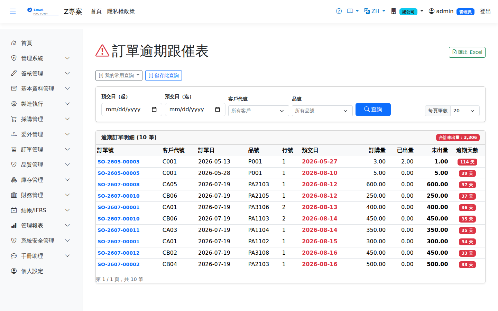

訂單逾期跟催Overdue Sales Orders
路由：/OrderOverdue | 逾交期未出貨訂單行列表Route: /OrderOverdue | Order lines past their delivery date and not yet shipped
列出已逾交期仍未出貨（或部分出貨）的訂單行，含逾期天數與生產進度，供業務跟催與答交。Lists order lines past their delivery date that are not shipped (or only partly shipped), with the overdue days and production progress, for sales follow-up and re-promising.

訂單逾期分析畫面截圖（示意，實際欄位/資料依權限與查詢條件而異）Overdue order analysis screenshot (illustrative; actual fields and data vary by permission and query criteria)
查詢Search
1
查詢列輸入條件後點「查詢」；欄位標題可點擊排序，清單下方有分頁導航。Enter your criteria on the query bar and click "Search"; column headers can be clicked to sort, and the paging controls sit below the list.
欄位說明Field reference
查詢條件Query criteria
| 條件Condition | 說明Guide |
|---|---|
| 預交日（起 / 迄）Delivery date (from / to) | 依訂單明細的預計交貨日區間篩選。留白時預設近 30 天，不是「不限起日」Filters by the expected delivery date range on the order lines. Left blank, it defaults to the last 30 days rather than to no lower bound. |
| 客戶代號 / 品號Customer / Product | 各自縮小查詢範圍each narrows the query scope |
報表欄位Report fields
| 欄位Field | 說明Guide |
|---|---|
| 訂單號 / 行號Sales Order / Line | 逾期的銷貨訂單與其明細行The overdue sales order and its lines |
| 客戶代號Customer | 訂單的往來客戶Customer the order belongs to |
| 訂單日 / 預交日Order Date / Delivery Date | 接單日期與承諾交貨日Order date and promised delivery date |
| 品號Item | 訂購的料件Item ordered |
| 訂購量 / 已出量 / 未出量Order Qty / Shipped Qty / Pending Qty | 訂單數量、累計已出貨量，以及仍待出貨的差額Ordered quantity, cumulative shipped quantity and the balance still to ship |
| 逾期天數Overdue Days | 廠別當地日 － 預交日；天數越大交期壓力越高，應優先安排出貨或與客戶協調。基準日取的是該廠時區的今天而不是伺服器時區，廠別與伺服器不同時區時才不會整批差一天The plant's local date − the promised delivery date; the larger it is, the greater the delivery pressure, so ship or renegotiate with the customer first. The baseline is today in the plant's own time zone, not the server's, so a plant in another zone is not out by a day across the board |